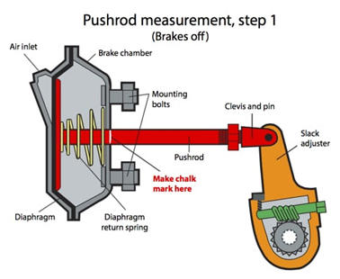
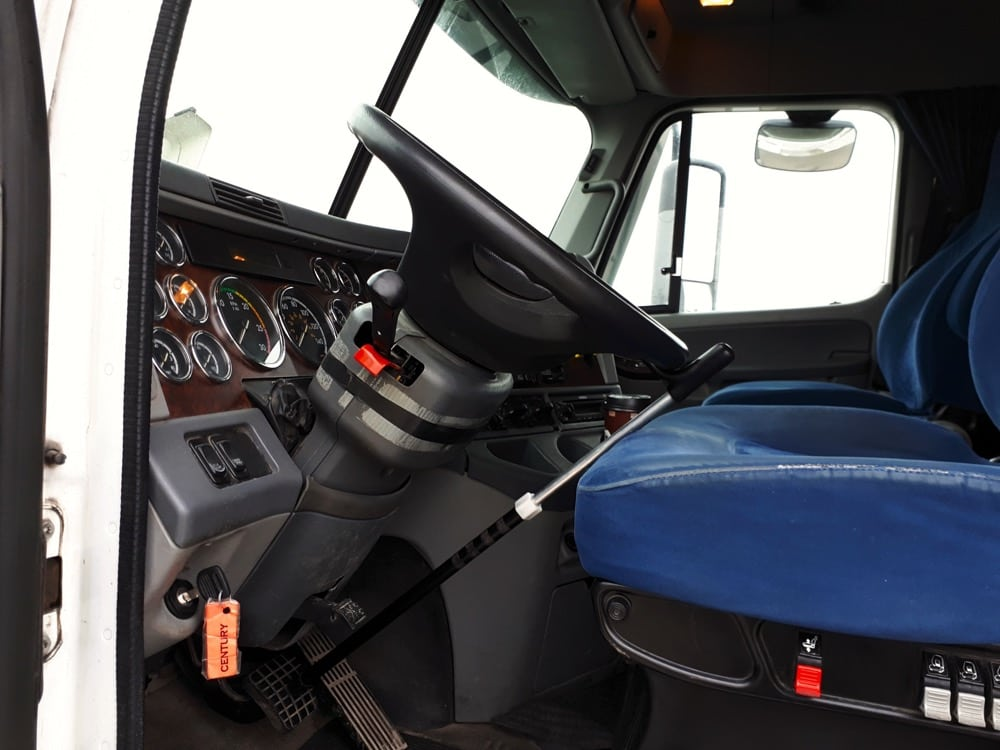
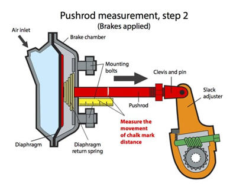
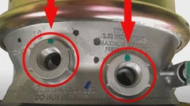
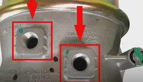
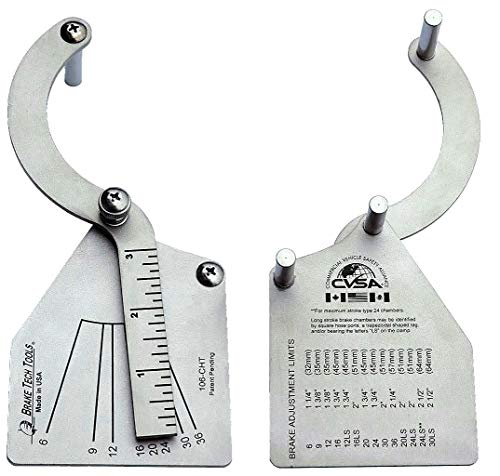
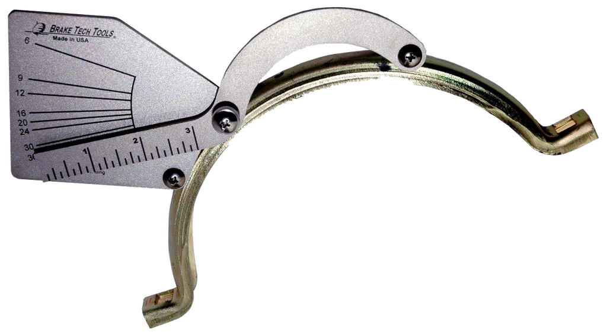
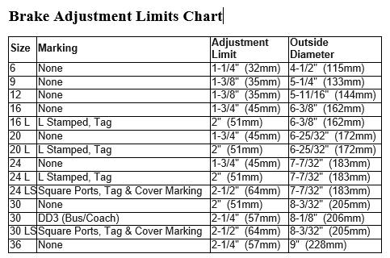

Push-Rod - Inspection Procedure
- 1. Enter cab
"The wheels are chocked, both parking brakes are applied, My truck & trailer secure" - 2. - Start the engine
- Release both parking brakes
- Pull hood latch to open hood
- Ask examinar, which side to perfrom the push-rod inspection (Driver or Passenger)
- Turn the steering wheel accordingly
- 3. Turn off Engine & Ignition ON (Make sure pressure is between 90-100psi.)
" My current pressure is ____psi"
- 4. Exit Truck & Open the Hood
- 7. If Truck equipped with Disc Brake, Tell examiner
"My truck has disc brakes , I will continue the inspection procedure verbally
- 8. Mark the push-rod.
"I will mark the push rod at the base of the brake chamber with chalk"
 - 9. Re-Enter truck & Apply Brake-Buddy.(verify my air pressure is between 90-100psi)
"I will fully apply my service brake with the brake buddy"
 - 10. Exit truck & Measure the push-rod movement.
"I will measure how far the mark on the pushrod moved from the base" (use tape-measure/ruler)

- 11. Read push-rod movement measurement.
"My push-rod moved 1" from the brake-chamber base, Which is under the 1.75" limit. My pushrod is with-in adjusment"
(If the push-rod movement is within 1.75", then the push-rod is within adjustmentement limit)
(If the push-rod movement is more than 1.75", the push-rod exceeds adjustmentement limit,It's a Major Defect) - 12. Remove the Brake-Buddy & Apply truck Parking brakes (Yellow & Red Out),Secure Truck & Trailer
- 13. Read Minor Defects & Major Defects
"This Brake-chamber has a circular connection port
"It does not have a plastic tag or a square connection port
"My Brake-Chamber is a Standard stroke brake Chamber"
- If the connection port is round & No plastic tag, this will be a standard stroke brake chamber.

- If the connection port is square & A plastic tag this will be a long stroke brake chamber.

6. Measure & Specify brake chamber size & adjument limit (use the brake chamber tool pitcured below)
"My Brake-chamber tool reads: 20 "
"My adjustment limit for a 20 Standard stroke brake chamber is 1.75"/(45mm)"
 
(Adjustment limits - on back of brake-chamber tool)

To see video of Push-Rod Inspection Procedure:Press Here!.